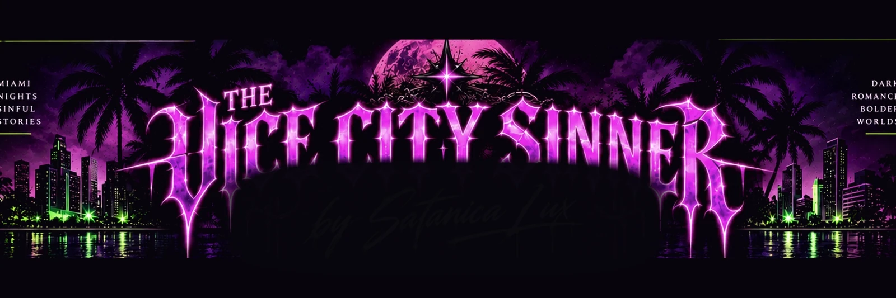

404
Wrong door.
Nothing back here but an empty room. The page you wanted moved, never existed, or took a wrong turn somewhere off Ocean Drive.

Surf City to Vice City and all the weird, ugly, filthy and pervy things in between.
Nothing back here but an empty room. The page you wanted moved, never existed, or took a wrong turn somewhere off Ocean Drive.